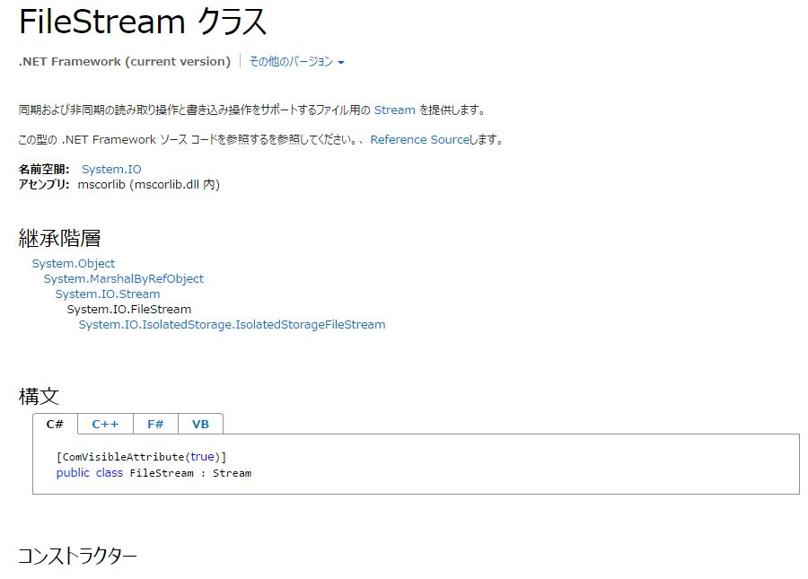
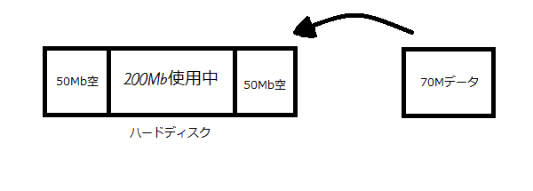
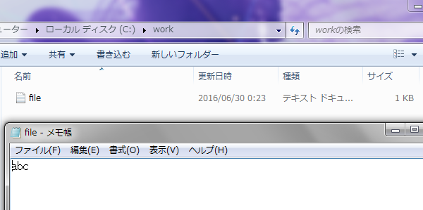
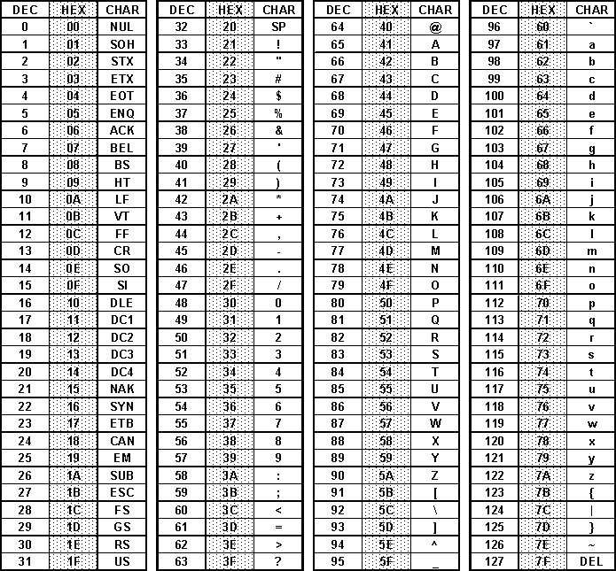
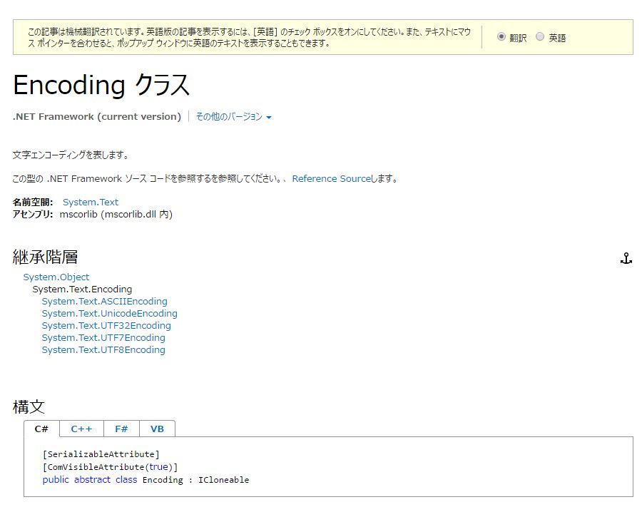
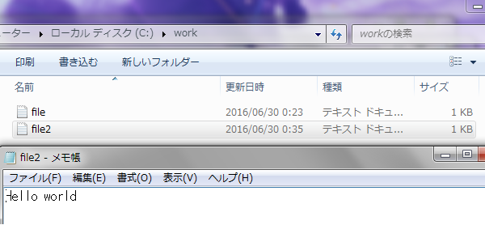
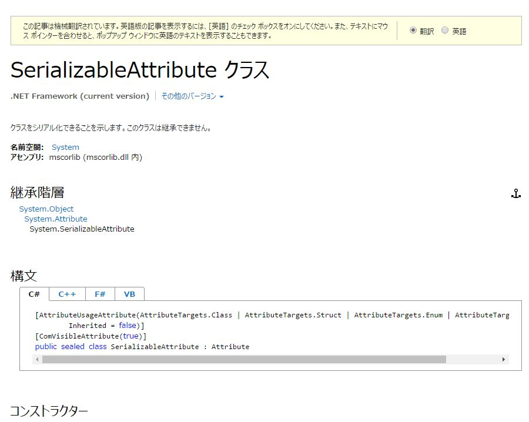
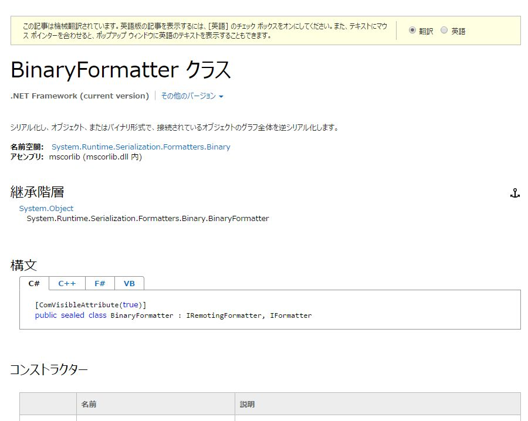
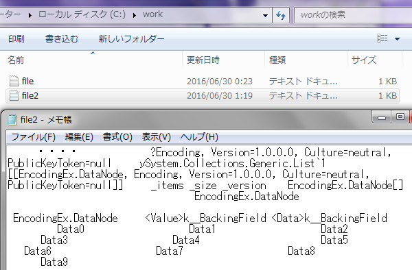
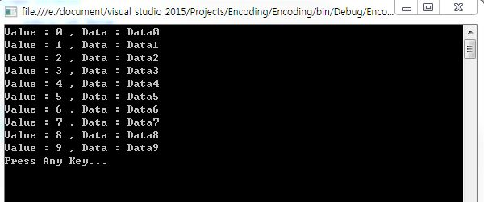

[C#] ファイルシステム(File System) - FileStream、 Encoding、 Serializable
こんにちは。明月です。
前の投稿でファイルとディレクトリを扱う方法について勉強しました。今日はファイルを作成する方法について勉強します。
パソコンの中でファイルの種類は様々なことがあります。その中でドキュメントタイプだけで考えてもエクセル、ワード、テキスト、CSV等の様々な種類があります。
でもドキュメントタイプか、イメージ、様々なデータでもファイルは基本的にバイナリデータでされています。バイナリデータということをプログラム的に考えると「byte」タイプにされていることの意味です。
FileStream
C#にはその「byte」型にされているファイルを書き込むあるいは読み込むクラスがあり、それをC#では「FileStream」というクラスがバイナリを扱うことです。そうすると「FileStream」についてMSDNから調べ、使用方法について勉強します。
MSDNリンク - FileStream クラス

FileStreamはMSDNをみると「ファイルについてストリーム(Stream)を提供します」ということで書いています。
そうすると、Streamについて知らないので、まずFileStreamを勉強する前にStreamについて勉強します。「Stream」というのはファイルだけではなく通信と様々なデータを扱う時にStream(ストリーム)を使います。
我々がテキストを開いて文字を書いて格納するものまたは格納したファイルを開いて格納したデータを画面に確認するものだと思います。改めていうとデータを格納して格納したとおりに画面に見えることが当たり前だと思いますがパソコンの中では当たり前ではないですね。
テキストに「あいうえお」と書くとファイルが小さいからそのままで格納することができると思いますが、ファイルサイズが「100Mb」「1Gb」だとそのくらいの空間がハードディスクにない可能性もあります。

そして上の状況になるとデータを「20Mb」「50Mb」で分けてデータをハードディスクに格納します。でもユーザーが「File」を作成する時あるいは閲覧する時にファイルが分散されているものを探して合せることやファイルを作成する時にディスクをの空間を計算して分割するんだと思えばファイルシステムを実装することが結構難しくなると思われます。
それで「Stream」では格納する時に一連のデータを受け取ってディスクの状況に合わせてファイルを作成することやファイルが分散されているものを一連のデータに組み合わせて返却するデータを返却するデータ構造パターンです。
そうすると「FileStream」を利用して「byte」単位のデータをファイルに作成してみます。
using System;
using System.Collections.Generic;
using System.Linq;
using System.Text;
using System.Threading.Tasks;
using System.IO;
namespace FileStreamEx
{
class Program
{
static void Main(string[] args)
{
FileInfo info = new FileInfo("c:\\work\\file.txt");
//FileInfoから書き込むストリームを取得する。
FileStream stream = info.OpenWrite();
//Asciiコード : a
stream.WriteByte(97);
//Asciiコード : b
stream.WriteByte(98);
//Asciiコード : c
stream.WriteByte(99);
//ストリームは終了するとCloseでコネクションを閉めなければならない。
stream.Close();
}
}
}

上の例を見るとbyte変数にASCIIコードと合わせるデータを入れてファイルに出力しました。ただ、StringとInt系を入れなくてbyte型に入れることにはパソコンはデータを文字ままで認識することではなく２陣データの形式で認識するので、Byteタイプに変換する必要があります。byte形式の中でもUnicode、Shift-JIS等があり、例はACSIIコードを利用してファイルを作成しました。

そうすればファイルを作成するたびにデータをByte形式に変換しなければならないと思いますが、C#にはデータをbyte形式に変換するクラスを提供しています。
Encoding
Encodingクラスはデータをbyte形式に変換するクラスです。そしてEncodingクラスはバイナリコードのタイプのASCII、ユニコード、shift-jisを選択して変換することもできます。
MSDNリンク - Encoding クラス

using System;
using System.Collections.Generic;
using System.Linq;
using System.Text;
using System.Threading.Tasks;
using System.IO;
namespace EncodingEx
{
class Program
{
static void Main(string[] args)
{
//FileInfo取得
FileInfo info = new FileInfo("c:\\work\\file2.txt");
//ストリーム取得
FileStream stream = info.OpenWrite();
//格納データの文字列
String data = "Hello world";
//文字列をbyte配列に変換する。
byte[] dataBuffer = Encoding.UTF8.GetBytes(data);
//格納
stream.Write(dataBuffer, 0, dataBuffer.Length);
//コネクション閉める。
stream.Close();
}
}
}

上の例を見ると確かに「String」型のデータをユニコードのbyte形式に変換してファイルを作成しています。作成したファイルをメモ帳で開くと「String」式で格納したデータがメモ帳で表示されることを確認できます。
Serializable(直列化)
今回はデータ単位の変換ではなく、クラス単位のデータを「byte」型に変換することです。「C#」はクラスを「byte」に変換するためには「Serialize(直列化)」が必要です。
「C#」のdata形式は静的な構造体ではなくクラスタイプなのでデータの順番が無くポイント形式でされています。でも「File」のバイナリの構造に変換するには「Stream」のデータ順番が必要だし構造的なデータ形式にされなければならないと思います。
そんなことでクラス形式のデータを「Stream」式のデータ構造に変換することをSerializable(直列化)だといいます。
MSDNリンク - SerializableAttribute クラス

MSDNリンク - BinaryFormatter クラス

筆者は「serializable」と「BinaryFormatter」のことを紹介していますが、「C#」にはクラスを宣言することにクラスが「serializable」が可能かどうかを宣言して実際に「Stream」のデータ構造に変換する時には「BinaryFormatter」のクラスを利用してクラスデータをStream形式に変換しています。
using System;
using System.Collections.Generic;
using System.Linq;
using System.Text;
using System.Threading.Tasks;
using System.IO;
using System.Runtime.Serialization.Formatters.Binary;
namespace EncodingEx
{
[Serializable]
class DataNode
{
public int Value
{
get; set;
}
public String Data
{
get; set;
}
}
class Program
{
static void Main(string[] args)
{
IList<DataNode> list = new List<DataNode>();
//DataNodeクラスの形式でデータ10個を作成
for (int i = 0; i < 10; i++)
{
DataNode node = new DataNode() { Value = i, Data = String.Format("Data{0}", i) };
list.Add(node);
}
BinaryFormatter formatter = new BinaryFormatter();
//FileInfo取得
FileInfo info = new FileInfo("c:\\work\\file2.txt");
FileStream stream = info.OpenWrite();
//直列化してファイルストリームを利用して格納する。
formatter.Serialize(stream, list);
stream.Close();
}
}
}

上の例をみると「DataNode」クラスを１０個割り当てリストに格納しています。そしてリスト自体を「BinaryFormatter」クラスを利用して「Stream」形式に変換し、ファイルに出力する例になります。出力したファイルをメモ帳に開くと人間が認識できない形でデータが作成されたことを確認できます。
using System;
using System.Collections.Generic;
using System.Linq;
using System.Text;
using System.Threading.Tasks;
using System.IO;
using System.Runtime.Serialization.Formatters.Binary;
namespace EncodingEx
{
[Serializable]
class DataNode
{
public int Value
{
get; set;
}
public String Data
{
get; set;
}
}
class Program
{
static void Main(string[] args)
{
BinaryFormatter formatter = new BinaryFormatter();
//FileInfo取得
FileInfo info = new FileInfo("c:\\work\\file2.txt");
FileStream stream = info.OpenRead();
//直列化されているファイルをストリームを通って取得する。
IList<DataNode> list = (IList<DataNode>)formatter.Deserialize(stream);
stream.Close();
foreach (DataNode node in list)
{
Console.WriteLine(String.Format("Value : {0} , Data : {1}", node.Value, node.Data));
}
Console.WriteLine("Press Any Key...");
Console.ReadLine();
}
}
}

今回は「serializable」して格納されたファイルを「BinaryFormatter」を利用して読み込んでクラスに割り当てしました。メモ帳には人間が認識できなかったデータでしだが、C#には「DataNode 」クラスデータが１０個あるリストのデータで認識して読み込まれました。
今までファイルを作成することや読み込む方法について勉強しました。プロジェクトでプログラムを作る時にファイルの関連モジュールはたくさんあると思われます。なのでファイルシステムは重要な部分だと思いますね。少なくても プログラムのLogを作成する部分でファイルの入出力(IO)を使うと思います。そのことでプログラムを作成することではファイルの入出力は基本だと思うので、機能にとしてよく認知して勉強するほうが良いと思います。
- [C#] ソケット(Socket)通信をする方法2020/05/13 17:37:13
- [C#] Thread(スレッド)2019/07/24 00:57:35
- [C#] 「IDisposable」と「using」2019/07/23 00:05:40
- [C#] ファイルシステム(File System) - FileStream、 Encoding、 Serializable2019/07/22 23:45:05
- [C#] ファイルシステム(File System) - FileInfo,DirectoryInfo2019/07/22 23:30:17
- [C#] MSDN(Microsoft Developer Network)2019/07/22 23:15:42
- [C#] Attribute(アトリビュート)2019/07/20 02:27:23
- [C#] Reflection(リフレクション)2019/07/20 02:22:03
- [C#] Objectタイプ、varタイプ(匿名タイプ)、dynamicタイプ2019/07/18 22:50:16
- [C#] Partial Type(クラス分割)、拡張メソッド2019/07/18 20:22:16
- [C#] Lamda(ラムダ)2019/07/17 23:06:42
- [Java] 56. Web serviceのサーブレット(Servlet)で初期化作業(properties設定)2021/07/02 17:10:36
- [Java] 55. Spring frameworkに文字化けを解決する方法(Encoding設定)2021/06/30 16:37:16
- [Java] 54. Spring frameworkでWeb filterを使う方法2021/06/29 18:25:12
- [Java] 53. ウェブサービス(Web service)でエラーページを処理する方法2021/06/25 13:35:54
- [Design pattern] 1-3. ファクトリメソッドパターン(Factory method pattern)2021/06/23 19:45:37
- [Java] WebSocketでチャット履歴をローディングする方法2021/06/15 18:34:45
- [Java] WebSocketを利用してユーザ(サイト運用者)が他のユーザとチャットする方法2021/06/15 17:20:08
- [Design pattern] 1-2. ビルダーパターン(Builder pattern)2021/06/11 19:06:28
- [Design pattern] 1-1. シングルトンパターン(Singleton pattern)2021/06/09 19:40:05
- [Design Pattern] デザインパターンの紹介2021/06/08 20:42:36
- [Tools] Dbeaver(無料Sql queryブラウザツール)2021/04/28 18:26:49
- [Bootstrap] HTMLデザインのフレームワークのBootstrap紹介2020/07/30 19:06:36
- [Python] メール(smtplib)を送信する方法2020/07/27 18:38:43
- [Python] HttpConnection(requestsモジュール)でウェブサーバーで接続する方法2020/07/20 14:41:51
- [Python] Excel(openpyxl)を扱う方法2020/07/16 16:40:31